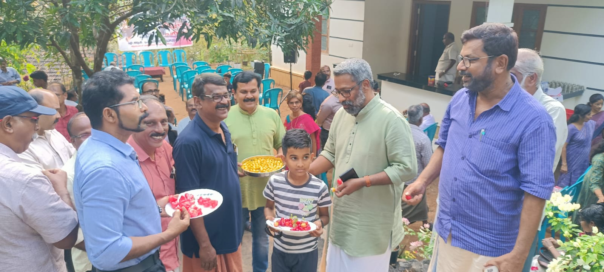

കണ്ണൂരിനടുത്തുള്ള മലയോര പ്രദേശമാണ് ആലക്കോട്. അവിടെ ഏറെ വർഷങ്ങളായി വ്യത്യസ്തമായി പ്രവർത്തിക്കുന്ന കൂട്ടായ്മയാണ് സർഗ്ഗവേദി റീഡേഴ്സ് ഫോറം. പ്രസാദ് മാഷും കൂട്ടരും ചേർന്നുള്ള സഹൃദയത്വം നിറഞ്ഞ കൂട്ടായ്മ.
പല വീടുകളിൽ മാറി മാറി വീട്ടുമുറ്റത്താണ് പരിപാടികൾ. മഴക്കാലത്ത് വീട്ടകത്തും. തികച്ചും അനൗപചാരികം. എന്നാൽ ഗൗരവമുള്ള സംവാദങ്ങൾ.
ഞാറ്റുവേല എന്ന വാട്സ് ആപ്പ് ഗ്രൂപ്പിലൂടെയാണ് സർഗ്ഗവേദിയെ കുറിച്ച് ആദ്യമായി കേട്ടത്. അന്നേ ആഗ്രഹിച്ചതാണ് ഒരീസം അവിടെ പോകണമെന്ന്.
ഗുരു നിത്യയ്ക്കൊപ്പം കേരളത്തിൽ യാത്ര ചെയ്യാൻ കഴിഞ്ഞപ്പോൾ ഇതുപോലെ പല വീടുകളിലും അയൽക്കാരും സുഹൃത്തുക്കളും ഒന്നിച്ചിരുന്ന് ഗുരുവിനോട് സംവദിച്ചത് ഓർമ്മയിൽ നിറഞ്ഞു.
ഗുരുവിൻ്റെ സ്നേഹസംവാദ യാത്രകൾ ഏറെയും വീടുകളിലായിരുന്നു എന്നതും ഓർമ്മിച്ചു. പ്രസാദ് മാഷോട് ഞാനത് പറഞ്ഞിരുന്നു. ആലക്കോട് ഷൗക്കത്തിനെ കാണാൻ കാത്തിരിക്കുന്ന വായനക്കാരുമുണ്ടെന്ന് മാഷും പറഞ്ഞു.
ഇന്നലെ വൈകുന്നേരം അത് സംഭവിച്ചു. വായന കൊണ്ടും അറിവുകൊണ്ടും ജീവിതം കൊണ്ടും നിറവുറ്റ ഒരു പറ്റം സഹൃദയരായ മനുഷ്യർക്കൊപ്പം പ്രദീപിൻ്റെ വീട്ടുമുറ്റത്ത് ഒരു സായാഹ്നം.
ഏറെ ദൂരെ നിന്നു പോലും എത്തിയ സുഹൃത്തുക്കൾ. ധൃതിയില്ലാതെ, ഔപചാരികതകളില്ലാതെ ജീവിതം പറഞ്ഞ് ഞങ്ങളിരുന്നു.
ഹൃദ്യം! ധന്യം! എന്നല്ലാതെ മറ്റൊരു വാക്കില്ല ആ സായാഹ്നത്തെ പറയാൻ. മനുഷ്യർ സ്നേഹത്തോടെ ചേർന്നിരിക്കൽ തന്നെ എന്തൊരു സമാധാനമാണ്.
മതിലുകളും വാതിലുകളും തുറന്നിട്ട് നമ്മുടെ വീട്ടുമുറ്റവും വീട്ടകവും ഇങ്ങനെ സഹൃദയ സദസ്സുകൾക്ക് വേദികളായാൽ വിഭാഗീയതകളെല്ലാം അറ്റുവീണ് നാം എത്ര വിനീതരായി മാറിയേനെ.
ആലക്കോട്ടെ എല്ലാ സൗഹൃദങ്ങൾക്കും പെരുത്ത് സ്നേഹം.
– ഷൗക്കത്ത്